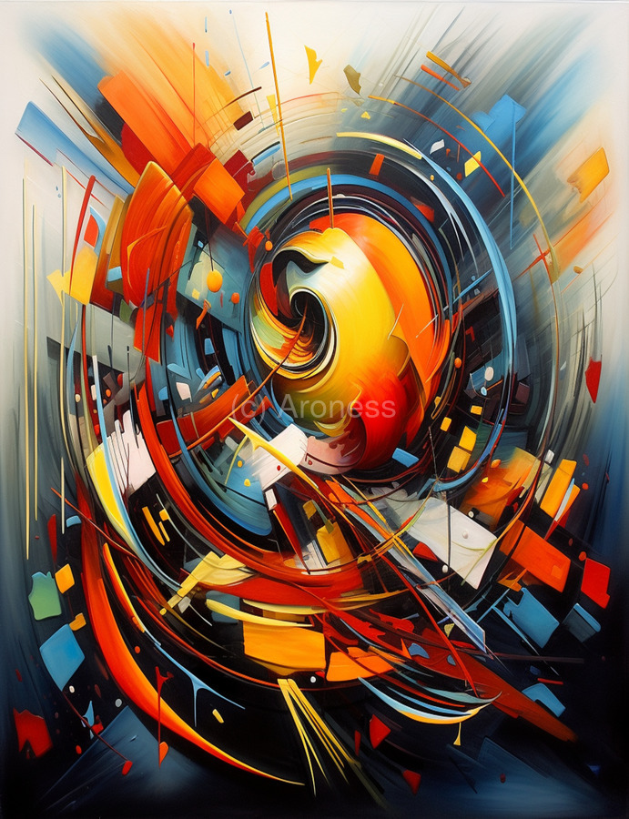

What is Abstract Art?
Abstract art is a form of art that does not represent or depict objects or scenes from the real world directly. Instead, it uses colors, shapes, and forms to create compositions that may not resemble anything from reality. The essence of abstract art is that it encourages the viewer to interpret the work in their own way, allowing for a wide range of emotional and intellectual responses.
Key Characteristics of Abstract Art
- Non-representational: Abstract drawings do not aim to represent real-world objects.
- Emphasis on color and form: Abstract art often uses vibrant colors, geometric shapes, and bold lines.
- Emotional expression: The artwork conveys emotion or ideas without traditional imagery.
- Focus on the viewer's interpretation: Each viewer may interpret the art differently, based on personal experiences or feelings.
Famous Abstract Artists
Some of the most influential abstract artists include Wassily Kandinsky, Piet Mondrian, and Jackson Pollock. Their work helped to define and popularize abstract art, pushing the boundaries of traditional art forms and challenging conventional perceptions of art.
Example of an Abstract Drawing
This image illustrates the use of color and shape without reference to any recognizable form. It is an example of how abstract art can evoke feelings, ideas, or emotions purely through visual elements.